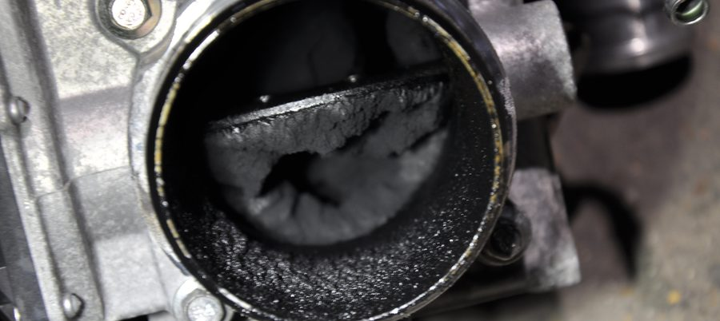

Why the 2.2 Skyactiv-D carbons up
To keep emissions down, the Skyactiv-D sends part of its exhaust gas back into the intake through the EGR system. That exhaust gas carries soot. At the same time, the crankcase breather feeds oil mist into the intake. Soot plus oil makes a sticky paste that coats the throttle body, the EGR valve, the intake manifold and the inlet ports, then bakes hard.
The 2.2 runs a low compression ratio and leans heavily on EGR, so it builds up carbon faster than many diesels. Short trips and low-rev driving speed it up, because the engine rarely gets hot enough to burn anything off.
Over time the passages narrow, the engine gets less air than it asks for, and it makes more soot, which then loads up the DPF faster. It feeds itself.

Symptoms
Carbon builds up slowly, so many owners get used to the car feeling a bit flat. These are the signs we see most often.
- Loss of powerThe car feels flat and sluggish, especially pulling away and up hills.
- Limp modePower suddenly cuts out and the engine runs in a reduced-power mode until it's restarted.
- Warning lightsEngine management light, often with EGR, airflow or boost-related fault codes.
- Frequent DPF regenerationsThe DPF regenerates more often than it should, or the DPF light comes on.
- Rough idle & hesitationUneven idle and a stumble or flat spot when you put your foot down.
- More smoke, worse economyMore visible smoke under load and fuel economy dropping off.
How we diagnose it
Fault codes & live data
We read the fault codes, then compare the air the engine is actually getting with what it's asking for, along with boost and EGR valve position.
DPF check
We check the DPF soot load and how often it's regenerating. Heavy carbon usually shows up here too.
Rule out the alternatives
Boost leaks, faulty sensors and turbo problems can look the same on the road, so we check them before blaming carbon.
Look inside
Where it helps, we inspect the intake directly so you can see the build-up for yourself in your report.
The fix
There's no shortcut for baked-on carbon. We take the intake apart and clean it by hand:
The intake manifold, throttle body, EGR valve and EGR pipework come off and are cleaned until they're back to bare metal. The inlet ports and valves are then walnut-blasted: crushed walnut shells are blasted into the ports. They're hard enough to strip the carbon but soft enough not to damage the metal, and every last shell is vacuumed out before the engine goes back together.
Everything goes back with new gaskets and seals. Then we reset the adaptations and do our final checks before the car goes home: a test drive, a fault code scan and a live data check.
Additives and "engine decarbonising" machines can't shift hard carbon from the manifold and ports. If the intake is badly blocked, the only proper fix is to take it apart.
Watch us do it
 Mazda 2.2 – carbon cleaning (diesel intake)
Mazda 2.2 – carbon cleaning (diesel intake)
Questions we get asked
Will a fuel additive or engine decarb machine do the same job?
Not on carbon this hard. The build-up sits in the intake, where additives in the fuel never reach, and it's baked on. Stripping and cleaning is the only way to get the intake back to bare metal.
What is walnut blasting?
Crushed walnut shells blasted into the inlet ports. They're hard enough to remove the carbon from the ports and valves but soft enough not to damage the metal. We vacuum every shell out afterwards.
Will a carbon clean fix my DPF problems?
It often helps, because a blocked intake makes more soot. But a DPF that's already badly loaded may need its own attention. We check both during diagnostics and tell you what each one needs.
How often does a Mazda 2.2 diesel need a carbon clean?
It depends a lot on how the car is driven. Short trips and town driving build carbon much faster than regular motorway runs. Rather than going by mileage, we go by symptoms and what the live data shows.
Why does the Skyactiv-D get so much carbon?
It recirculates a lot of sooty exhaust gas through the EGR system, and the crankcase breather adds oil mist. Together they make a sticky deposit that bakes onto the intake.